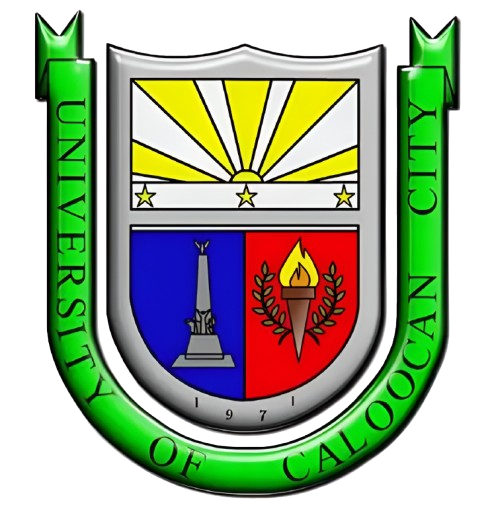
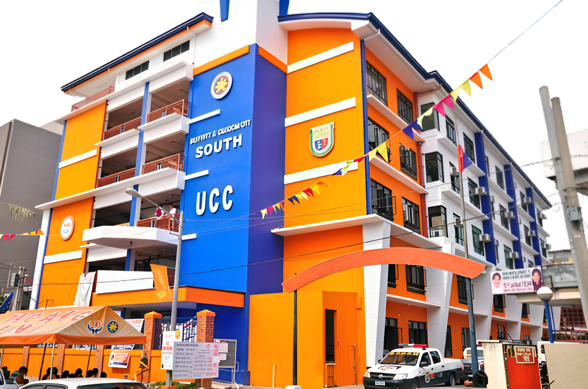

CONSTRUCTION OF MAIN AND EXTENSION CAMPUSES
Continuous construction and development of the Main and Extension campuses to provide better spaces for learning and growth.



The University of Caloocan City (abbreviated as UCC) is a public-type local university established in 1971 and formerly called Caloocan City Community College and Caloocan City Polytechnic College.
It is located in the south, at Biglang Awa, with main campus fronting EDSA. To the north, it has two extension campuses, one is located in Camarin (Business Campus) while the other is located in Camarin (Congressional and Engineering Campus).
First-year operation of Caloocan City Community College.
New Bachelor of Science in Industrial Education and Business Technology program.
Became Caloocan City Polytechnic College.
Buena Park and Camarin Annexes became operational.
Student population reached 3,600.
Officially proclaimed the University of Caloocan City.
UCC College of Law established.
New administration and continued expansion.
Continuous construction and development of the Main and Extension campuses to provide better spaces for learning and growth.
Additional classrooms and laboratories, libraries, audio-visual facility, sound engineering and radio broadcasting studio, speech laboratory, multipurpose halls, covered courts, drainage improvements, and air-conditioning.
Free education in the University of Caloocan City pursuant to City Ordinance No. 063 series of 2014.
From a humble beginning of forty-two (42) students in 1971 to over 13,000 students by 2022.
UCC has achieved outstanding results in both the Licensure Examination and the Bar Examinations, reflecting the University's commitment to academic excellence and producing competent, licensed professionals.
The UCC College of Law continues to produce competent, service-oriented and socially responsible legal professionals.
UCC offers the following engineering programs:
The University continues to diversify its academic offerings with the introduction of:
UCC is planning to offer quality health and medical programs at the future Barangay 180 campus:
Basta sa Caloocan, walang batang maiwan